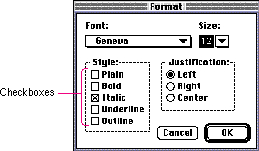
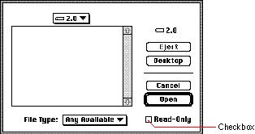
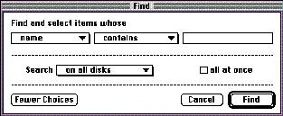

|
CheckboxesCheckboxes, like radio buttons, provide alternative choices for users. A checkbox is a square with label text next to it. The user clicks the checkbox to select or deselect it. When the option is on, an x appears in the box. When the option is off, the box is empty. Checkboxes act like toggle switches, meaning that the setting for each checkbox is either off or on. Use checkboxes to indicate one or more options that must be either off or on. Checkboxes are independent of each other, even when they offer related options. Any number of checkboxes can be on or off at the same time. Figure 7-10 shows some typical checkboxes.Figure 7-10 A set of checkboxes  You can have one checkbox or as many as you need. It's a good idea to group sets of checkboxes that are related and to separate the groups from other groups of checkboxes and radio buttons. Each checkbox has a label. It can be very difficult to label the option in an unambiguous way. The label should imply two clearly opposite states. For example, in a dialog box for opening files, a checkbox provides the option to open a file in a read-only format. The checkbox is labeled Read-Only. The clearly opposite state, when the option is off, is to open files that the user can read and write (or make changes to). Figure 7-11 shows this checkbox. Figure 7-11 A single checkbox in a dialog box  If you can't find a label for the checkbox that clearly implies its opposite state, you might be better off using radio buttons. With radio buttons, you can use two labels, thereby clarifying the states. It's sometimes tempting to use a checkbox because one item takes up less space than two. However, the resulting item may be ambiguous and thus difficult for your users to understand. When you use one checkbox to provide two options, it makes the user think explicitly about what the significance of the option is. The user must click the checkbox or its label text to enable the option. In this way, you can emphasize the visible choice. For example, when the dialog box that the Find command brings up in System 7 was being designed, two implementations were considered, a set of radio buttons and a checkbox. The radio buttons were to be labeled "all at once" and "one at a time." These choices pertain to how the operating system should search for a text string in filenames. In the first option, all at once, the operating system highlights all the filenames in the open folder that match the text string. This option is similar to how the earlier Find File command operated, displaying all matches in a portion of the window. In the other option, one at a time, the operating system searches until the first item is found and highlights it. To see another match, the user must choose Find Again. One reason to use the checkbox was to reduce the visual clutter of the dialog box. The compelling reason that persuaded the designers to use a checkbox labeled "all at once" was that it emphasized the choice. Not setting the checkbox to on caused the normal state to be searching for one instance at a time. This made users focus on the choice when they wanted the Find operation to act differently than it normally did. Figure 7-12 shows the Find dialog box with the final implementation. Figure 7-12 The Find dialog box  |